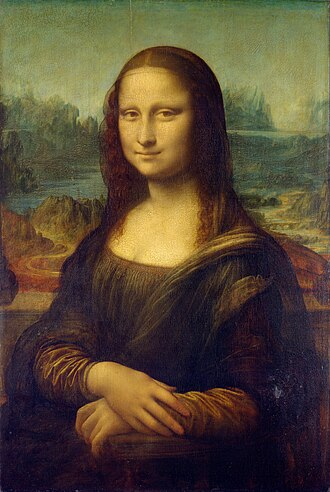
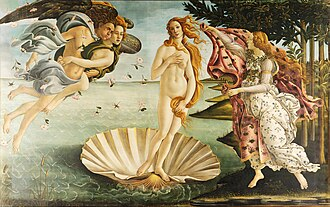
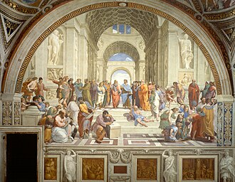
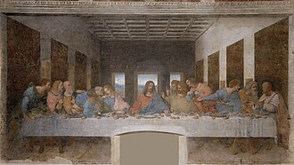
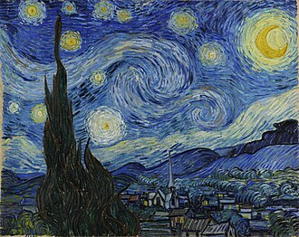
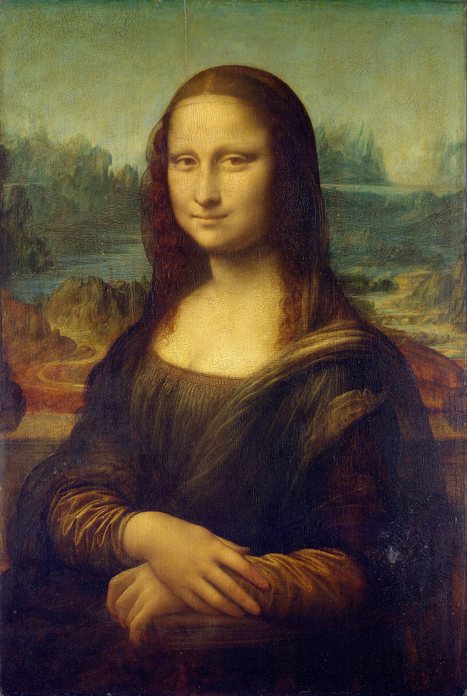

移动端方案草图 · 2026.11.05。画海优先呈现，保留远近层次与漂浮；随后进入作品优先的展厅和全图详情。按钮演示局部流程；并非已上线产品。
01 / 打开，即置身画海
从洞窟到现代，沿着作品走进艺术史。





画海是首屏主体，标题与控件退到边缘。草图演示漂浮与暂停；循环拖动沿用正式画海实现。中央作品可打开详情。
02 / 先看到画，再展开时代
一张脸，为什么可以让人看五百年？

先看嘴角，再看眼睛。轮廓没有被硬线围住，明暗像烟雾一样慢慢过渡。
艺术家研究人体、空间与光线，也把这些观察组织成平衡的画面。背景在这里按需展开，作品仍在阅读主线里。
木板油画 · 卢浮宫。原作已进入公有领域；正式实现保留逐图来源与权利说明。此草图复用仓库本地图片。
收起长篇历史与图解；切换作品紧接展签。目录与上一间、下一间都有明确文字。
03 / 全图、介绍、返回各归其位
从柔和的面部轮廓看达·芬奇的晕涂法，再比较身后山水与人物的距离。木板油画，巴黎卢浮宫；正式产品沿用完整的逐图署名与来源链接。
本草图放大按钮演示原图滚动与适应切换；完整焦点围栏、历史返回、触摸缩放留待正式实现与真机验证。